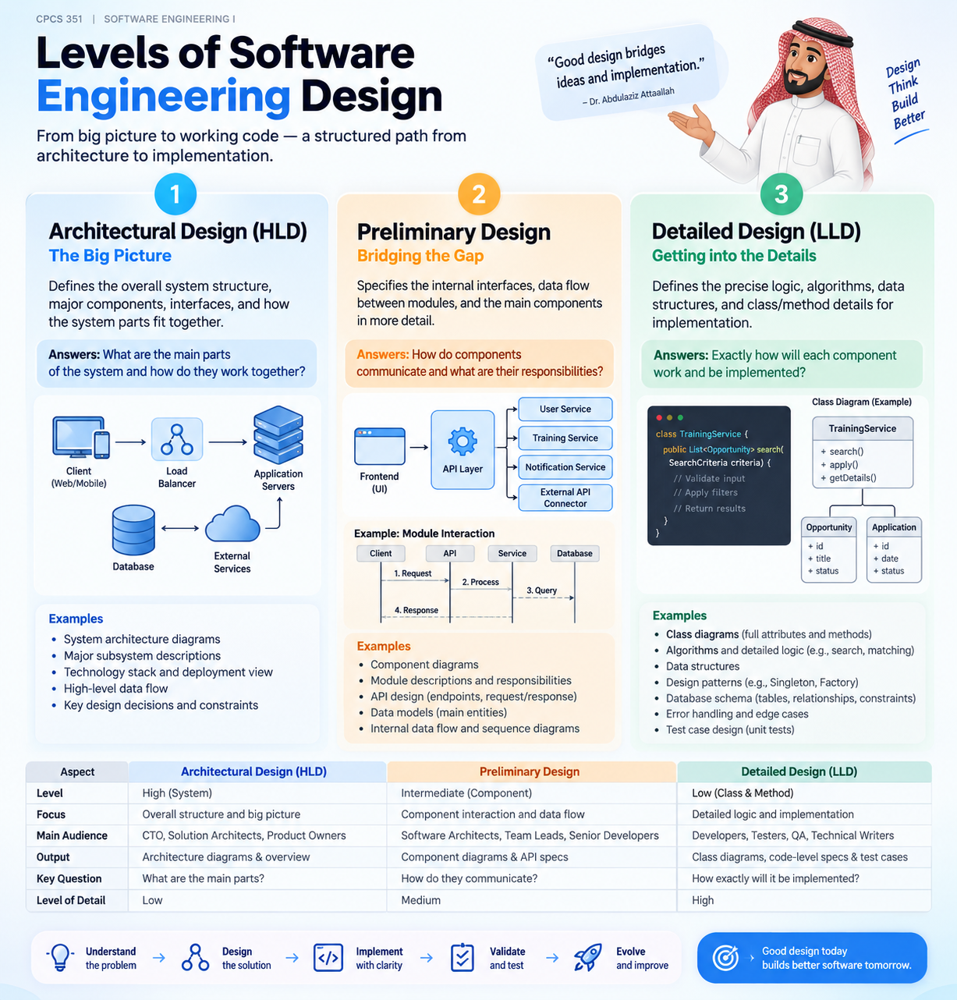
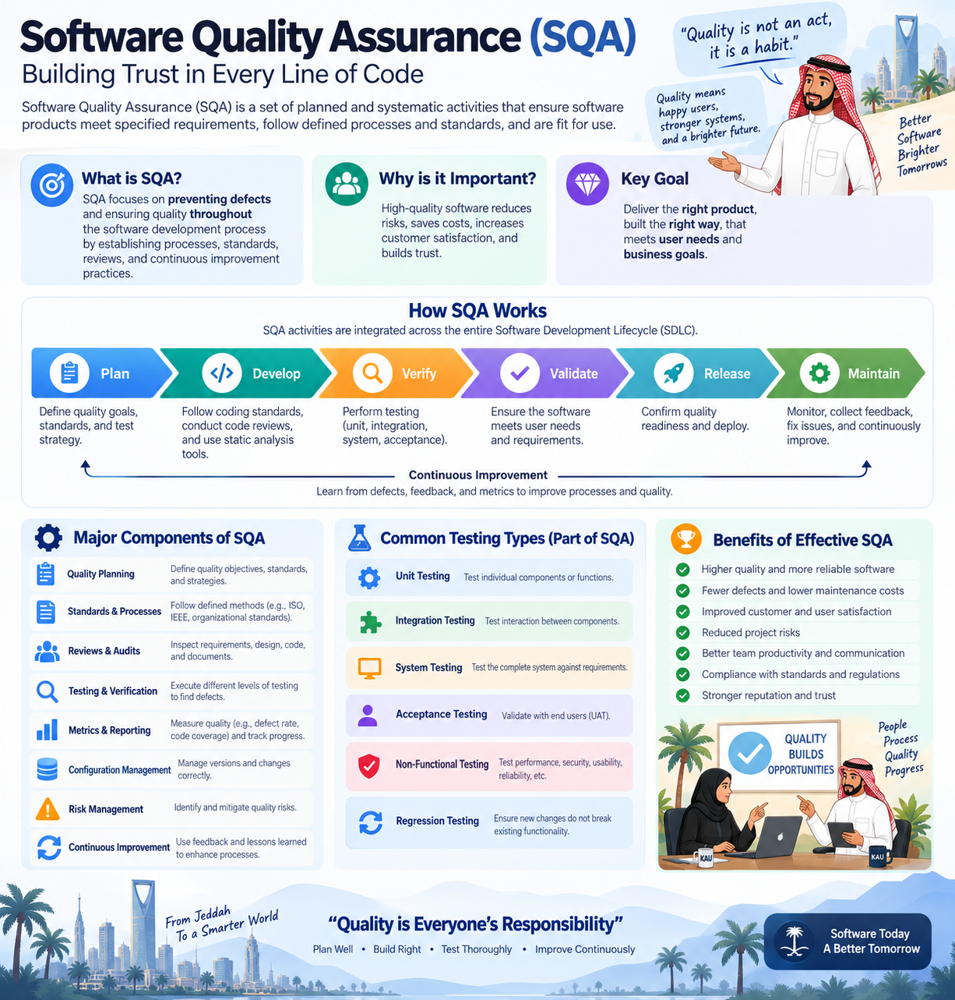
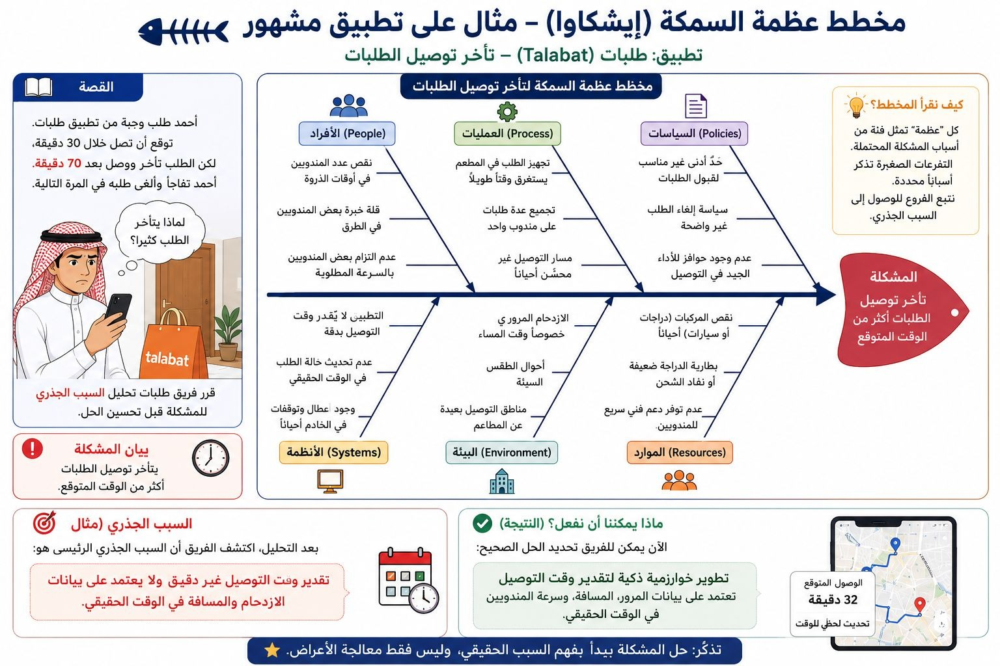

{kind=link}

DESIGN · ARCHITECTURE
Levels of Software Engineering Design
Architectural, preliminary, and detailed design—from the system big picture to implementation-level decisions.
View full infographic ↗VISUAL LEARNING
Visual explanations for key software engineering ideas, project thinking, and problem analysis.
ALL INFOGRAPHICS
Open any visual for the full-resolution version.

Architectural, preliminary, and detailed design—from the system big picture to implementation-level decisions.
View full infographic ↗
How a software need moves through analysis, design, implementation, testing, deployment, and evolution.
View full infographic ↗
How quality is planned, verified, validated, measured, and improved throughout development.
View full infographic ↗
Scope, schedule, cost, quality, people, risk, communication, monitoring, and delivery.
View full infographic ↗.png)
Observation, interviews, gap analysis, root-cause analysis, brainstorming, and prioritization.
View full infographic ↗.png)
The big-picture destination compared with the measurable steps used to reach it.
View full infographic ↗
A worked Ishikawa example for organizing possible causes and identifying root causes.
View full infographic ↗{kind=link}
{kind=link}